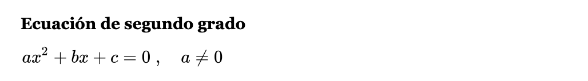

CC CALCULADORA: PARA APRENDER ECUACIONES
CC CALCULADORA: PARA APRENDER ECUACIONESLas ecuaciones de primer grado con una incógnita son el primer paso en el mundo del álgebra.
mx+n=0
Para resolver dicha ecuacion debemos seguir las siguientes reglas:
Resolveremos una ecuación muy simple:
2x+1=9
Para calcular la ecuación equivalente y eliminar el +1 del primer miembro de la ecuación sumamos -1 en ambos lados de la igualdad
2x+1-1=9-1
2x=8
(Comúnmente, pasamos el +1 al otro miembro cambiando el signo; 2x=9-1)
Del mismo modo, para eliminar el 2 que multiplica a nuestra x, dividimos en ambas expresiones entre 2:
2x/2=8/2

Este ecuacion posee una expresion general:
Donde X es la variable, y a, b y c constantes;
Este polinomio se puede interpretar mediante la gráfica de una función cuadrática, es decir, por una parábola.
Esta representación gráfica es útil, porque las abscisas de las intersecciones o punto de tangencia de esta gráfica, en el caso de existir, con el eje X son las raíces reales de la ecuación. Si la parábola no corta el eje X las raíces son números complejos, corresponden a un discriminante negativo. Para una ecuación cuadrática con coeficientes reales o complejos existen siempre dos soluciones, no necesariamente distintas, llamadas raíces, que pueden ser reales o complejas (si los coeficientes son reales y existen dos soluciones no reales, entonces deben ser complejas conjugadas).
Soluciones de una ecuación de segundo grado Si queremos saber las posibles soluciones de la ecuación sin llegar a resolverla nos podemos fijar en el valor del radicando
D=b 2– 4ac (discriminante)
Hay que recordar que las ecuaciones de segundo grado ax2+bx+c=0 no siempre nos aparecen de forma completa. Cuando b=0 o c=0 la ecuación se llama incompleta.

Si c=0:
ax2+bx=0
La resolvemos sacando factor común x. De manera que nos quedaría:
x.(ax+b)=0.
Teniendo en cuenta que si el producto de dos o más factores es cero al menos uno de ellos es cero,las soluciones son x=0 y x= -b/a.
Si b=0
ax2+c=0
ax2=-c